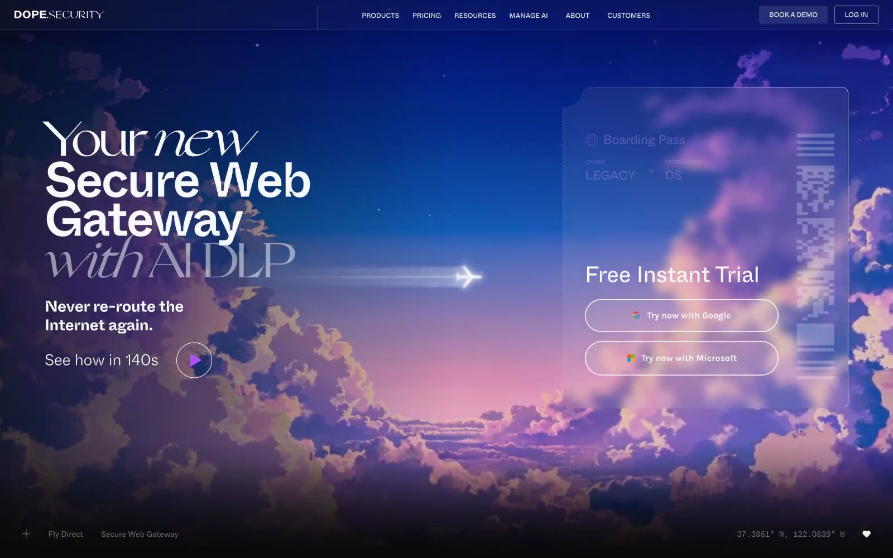

dope.security 的 Design.md 主题展示，围绕安全合规、暗色界面、SaaS 产品、AI组织页面。
Explore dope.security's dark SaaS design system: Midnight Eclipse #090909, Cloud Whisper #f7f9fa colors, Whyte Inktrap, Whyte Inktrap Mono typography, and...

#090909: #090909#f7f9fa: #f7f9fa#f0f0f0: #f0f0f0#6b6b6b: #6b6b6b#454545: #454545#828384: #828384#af50ff: #af50ff#423738: #423738#333333: #333333#475467: #475467#271635: #271635#7f56d9: #7f56d9display: Whyte Inktrap Monobody: Whyte Inktrap Monomono: Whyte Inktrap Monohints: Whyte Inktrap Mono